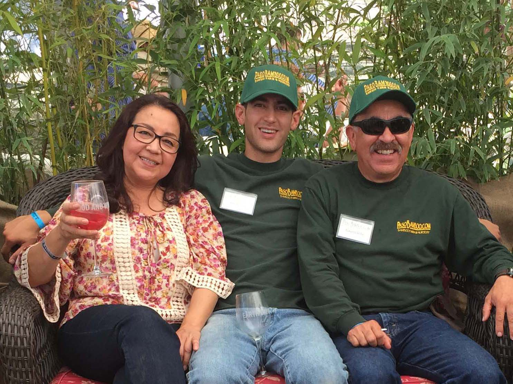
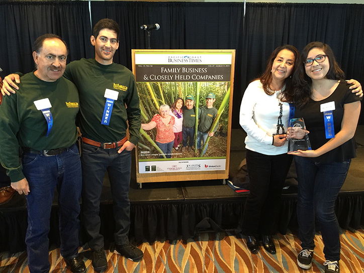

About PasoBamboo
This is a family operated bamboo farm and nursery. We have been growing and enjoying bambo for about 30 years. I am an engineer by profession, but since I grew up on a farm, I always had the dream of raising our family on one. In the year 2000 my dream came true, as we were able to buy a 40 acre farm, formerly a small family run dairy.
In the summer of 2001 we planted an initial test bamboo planting consisting of about 60 varieties. With some trial and research, we selected the best performers and planted 4 acres of bamboo in 2002-03. Years later, we now have beautiful full, mature sized bamboo groves. We have cold hardy and heat resistant bamboo in large quantities. In 2007, I was finally able to leave my enginnering job and began to devout my full time into developing our bamboo nursery.
You can hand select the plants which best suit you.
We are in San Luis Obispo (SLO) County, the belly button of California.
Content goes here
Our Business
Our goal is to provide our customers with the best bamboo plants and knowledge on how to keep your bamboo thriving in your garden setting. Please visit, tour our groves, and we can help you select a bamboo species that will meet your needs. We can provide you from small starter plants to full sized 30' specimens. Delivery is available, or you can pickup.
Traditional belief holds that being in a bamboo grove - the favorite dwelling place of Buddha - restores calmness to emotions and stimulates creativity!
